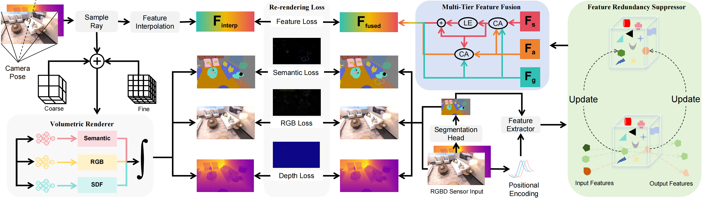

论文 1 · ICRA 2026 Publication 1 · ICRA 2026
MTE-SLAM: Multi-Tier Feature Fusion for Efficient Neural Semantic SLAM
面向高效神经语义 SLAM 的多层级特征融合方法
该工作提出面向 RGB-D 语义 SLAM 的 MTE-SLAM 框架，通过多层级特征融合将几何、语义与外观信息在全局和局部尺度上协同建模。全局模块利用跨模态注意力增强场景级语义一致性，局部模块通过邻域连续性与动态门控改善物体边界、细小结构和语义区域的清晰度。 MTE-SLAM is an RGB-D semantic SLAM framework that jointly models geometry, semantics, and appearance through multi-tier feature fusion, improving boundary clarity and fine structural details in semantic maps. 为降低在线建图中的冗余特征累积，论文设计了特征冗余抑制模块，根据特征重要性和时序变化自适应压缩表示。在 Replica 和 ScanNet 数据集上的实验显示，该方法在跟踪、重建、语义分割与运行效率之间取得良好平衡，并在语义神经隐式 SLAM 系统中实现最高可达 4 倍的速度提升。 A feature redundancy suppressor further compresses representations during online mapping. Experiments on Replica and ScanNet show strong tracking, reconstruction, semantic accuracy, and up to a 4x speed improvement.
查看论文详情 View Details